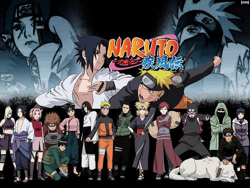

Naruto Shippuden Opening 6 - Sign

I realize the screaming pain
Hearing loud in my brain
But I'm going straight ahead with the scar
Wasurete shimaeba ii yo kanji nakunacchaeba ii
Surimuita kokoro ni futa wo shitanda
Kizutsuitatte heiki da yo mou itami wa nai kara ne
Sono ashi wo hikizuri nagara mo
Miushinatta jibun jishin ga
Oto wo tatete kuzureteitta
Kizukeba kaze no oto dake ga
Tsutae ni kita yo kizuato tadotte
Sekai ni oshitsubusarete shimau mae ni
Oboeteru ka na namida no sora wo
Ano itami ga kimi no koto wo mamotte kureta
Sono itami ga itsumo kimi wo mamotterunda
Kizutsukanai tsuyosa yori mo kizutsukenai yasashisa o
Sono koe wa dokoka kanashisou de
Kakechigaeta botan mitai ni
Kokoro karada hanareteita
Mou ichido kokoro wo tsukande
Tsutae ni kita yo kizuato tadotte
Sekai ni oshitsubusarete shimau mae ni
Oboeteru ka na namida no sora wo
Ano itami ga kimi no koto wo mamotte kureta
Sono itami ga itsumo kimi wo mamotterunda
Itsuka kiita ano nakigoe wa
Machigainaku sou jibun no datta
Subete wa kono toki no tame ni
Kitto hajime kara wakattetanda
Mou nidoto jibun dake wa hanasanaide
Kizuite kureta kimie no aizu
Ano itami ga kimi no koto wo mamotte kureta
Tsutae ni kita yo kizuato tadotte
Sore nara mou osoreru mono wa naindato
Wasurenaide ne egao no wake wo
Ano itami ga kimi no koto wo mamotte kureta
Ano itami ga kimi no koto wo mamotte kureta
Sono itami ga itsumo kimi wo mamotterunda